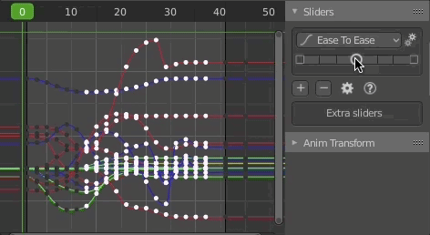
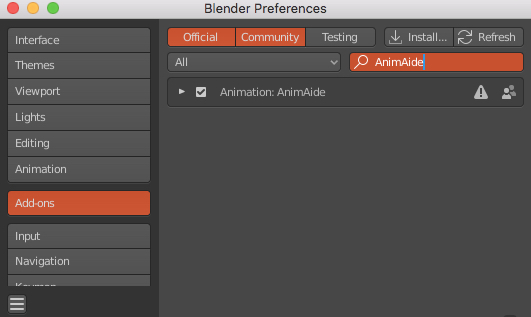
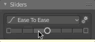
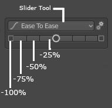
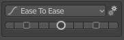
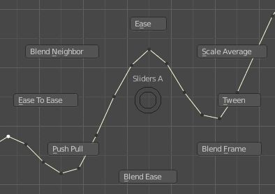
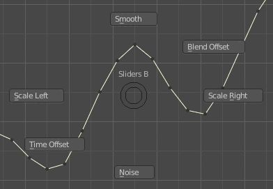
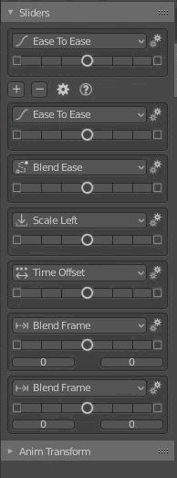

Hello there! This is AnimAide,
an add-on for Blender that has some helpful tools for animation.
In contrast to modeling, when animating there are not that many options
to manipulate the keys on a fcurve like you can with the vertex on a
geometry. When modeling there are countless ways to edit geometry, but
when it comes to working in the graph editor we are out of luck.
That is where AnimAide
comes in. It gives you the ability to simultaneously manipulate a group
of keys across multiple fcurves from either animated objects or animated
bones in an armature.
There are some Blender options to manipulate keys, but AnimAide
open the door to new possibilities. Not only has a wider range of tools
but when working with a group of fcurves each one will have their local
space.

This kind of tools is standard in the game and film industry.
Go to this online address: https://github.com/aresdevo/animaide
and download the addon to a chosen folder on your computer.
Then in Blender, go to "Add-ons" tab on the preference window. There
click on the "Install" button and navigate to the folder where you
downloaded the add-on. Choose the AnimAide file and it will be
installed.
Make sure the add-on check-mark is active.

After installed you can find AnimAide
panels on a tab in the Graph Editor's sidebar.
At the moment, AnimAide has two main panels: Sliders and AnimTransform.

The
slider is a series of buttons where the center one activates a slider
mode when you click on it (you don't have to keep pressing the mouse).
To accept the value of the slider you simply left-click again or
right-click to cancel. The buttons at either side of the center circle
apply the tool in increments of 25%

The slider preference menu provides
adjustment options to the particular tool selected.
The Slope affects some of the
tools making the transition sharper
I still have to take the
slope option out of the menu on the tools that are not affected by
it.
Overshoot allows a bigger range for the slider

At
the moment there are 14 different tools in the slider:
This fcurve adjustment it is very
useful because usually you want a nice transition between to different
point in time. It does not remember how the curve was before activating
the tool
With a higher slope:
With this one, you just have either an
ease-in or an ease-out, because sometimes that is just what you need. It
does not remember how the curve was before activating the tool

This is similar to "Ease", but it
remembers how the curve was before engaging the tool.

Progressively makes the values of the
selected keys match either of the neighboring keys. it remembers how the
curve was before engaging the tool.

Allows you to use specific frames in
the animation as reference for matching the values of the selected keys.
It creates markers on the reference frames.
it remembers how the curve was before engaging the tool.

Move the selected keys as a block until
it reaches either neighboring key

Exaggerates the values (push) or
decreases the intensity of the animation (pull)

Scale the values of the selected keys
using the average of all the values as the anchor.

Scale the values of the selected keys
using the left neighboring key as the anchor.

Scale the values of the selected keys
using the right neighboring key as the anchor.

It will try to average the values of
the keys to smooth out the fcurve. You might have to run the slider more
than once to get a smoother result.
I'm working on a better smoothing method

It adds random values to the selected keys. The more you move the slider to the right de more the intensity grows.
I'm working on a better noise
method

The effect is similar to sliding the
keys in time, but with this option, the keys stay in the same frame. It
works better when there are a lot of keys.

A simple linear transition between the
neighboring keys

Aside from accessing those tools using
the slider on the panel, you can also use shortcuts for faster workflow.
you can see the list on the question icon on the main panel:
If pie menus are your thing, We have
also provided two of them
 
When you use either pie menus or
shortcuts the main slider (that one that always shows) will change to
that tool.
But in case you like having the option to interact with different
sliders at the same time, we have provided you with that option too. By
clicking the plus icon on the main panel you can add extra sliders (with
the minus you can remove them). Each extra slider can use any of the
tools with the preferences adjusted independently (so you can have the
same tools in different sliders with different preferences).

There
is another workflow where you can jump from key to key and adjust each
one just with the keyboard. For that there are some shortcuts:
Toward the Left Neighboring Key: (-)
Toward the Right Neighboring Key: (+)
Match Left Neigboring Key: (shift -)
Match Right Neigboring Key: (shift +)
For this to work make sure the option "Non-selected keys on frame" is checked in the main panel settings.
If you choose the "Non-selected
fcurves" option then you can affect all the keys in the frame even if
the fcurve is not selected.
This shortcuts can work on multiple
selected keys too, but make sure the "Non-selected keys on frame" is
unchecked or you will also modify the keys on the current frame and
maybe that is not what you want.
This tool freezes time, so any
transformation you do to an animated object or armature affect the
entire animation equally
If you add a mask to it just that
section will be affected.
The mask has the option of adding a
blending border the fades the effect of the tool.

You can control the shape of the
blending using the mask option menu
Thanks for the inspiration to all the
people that have created similar tools for other software. I wanted to
bring the fun to Blender and share it with the community. I hope you
find these tools useful